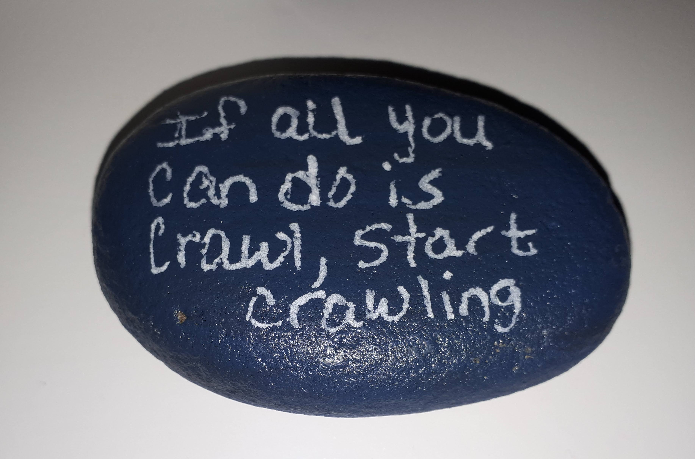
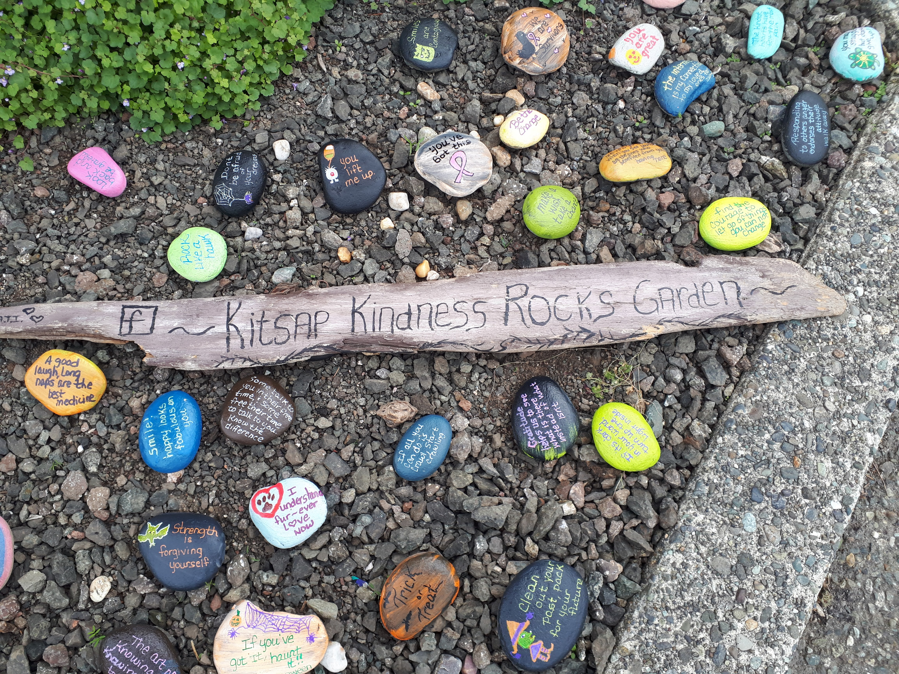
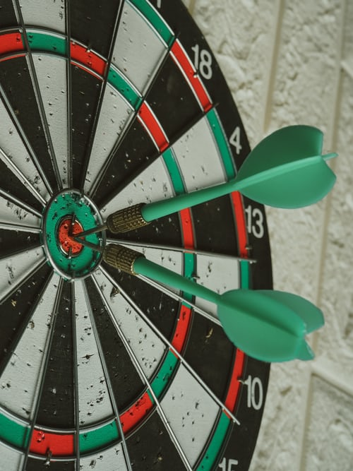

I have this pebble that says “If you all can do is crawl, start crawling”. It has sentimental value, not just for the quote but it also reminds me of my state of my mind at the time I acquired it. Few weeks ago, I was in a small Norwegian town of Poulsbo where I had just finished a half marathon, high on endorphins, low in certainity. I had goals for the next few months that would stretch me way beyond my comfort zone. I had signed up for a trail race out of town, a piece of cake for an experienced driver and trail runner; I was neither. To actually run this race, I had to not just train for it, but also get over my driving anxiety so as to get to trails for training and the race sustainably. This was a north star I was slowly crawling to, so of all the pebbles I stumbled upon at the Kitsap Kindness Rock Garden, this one resonated with me the most.

Fast forward today, I not only celebrated my first trail race but I’m also confident to drive on my own. I didn’t cure cancer but I can say a thing or two about goals, how impossible they seem and why you should have them anyway. We loosely use #goals to describe people who have achieved what we aspire, but in my opinion it should be #dreams. Dreams become goals when there is a deadline; running a marathon someday is a dream, running one next spring is a goal. A deadline is a commitment, it gets your skin in the game which although can be anxiety inducing, it fires up your brain to hatch plans and back up plans to reach the goal. A good goal will spark your curiosity, it will push you to learn and seek community. It will give your actions purpose and will require non-zero number of sacrifices as you align your habits with its demands.
Goals are great but there is a reason they are not very popular. Life,, for instance a global pandemic, gets in the way of even the most foolproof plans. When you’re not getting feedback or making progress fast enough those sacrifices may feel in vain. Even when all is well, there is always Bruno who will not be silenced without a fight. At this point, it is important to be patient and trust the process. The sweet spot is just around the corner where you fall into a rhythm, you’ll have encountered enough obstacles that you know how to work around them, the plan stops being a chore but an opportunity, the goal starts more feels more achievable than scary. Even though you’re not quite there yet, you can’t help but feel proud of how far you’ve come; If you could get this far, there is no limit to how far you can go.

You may not reach your goal but here is why you should have one (or more) anyway. First off, it gives you something to look forward to. This is great not just for its intrinsic value but also for your relationships. If your goal excites you, it will trickle into your conversations, your tribe will know exactly how to support you, and you will inturn pay it forward. Moreover, fear can be an asset when it makes you search for community and people on a similar journey. Learning and growing with others is a great way to make meaningful connections. Additionally, even if you don’t reach it, you’ll land at a better place than you were before knowing more about yourself. You may not run a marathon but you can now run further than you thought were your limits.
The holidays are upon us, after which most of us will be once again listing New Years Resolutions. I know my goal-oriented fellows have already nailed that list. If you haven’t I hope I’ve convinced you to atleast try. The list can have whatever you consider a step forward for you. It doesn’t have to be long or grand, in fact the practical it is, the higher the chances of materializing. Whatever you commit to, happy crawling and happy holidays!.